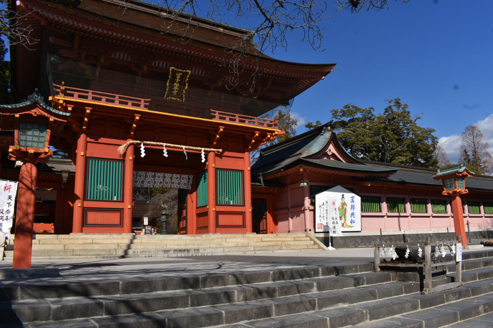
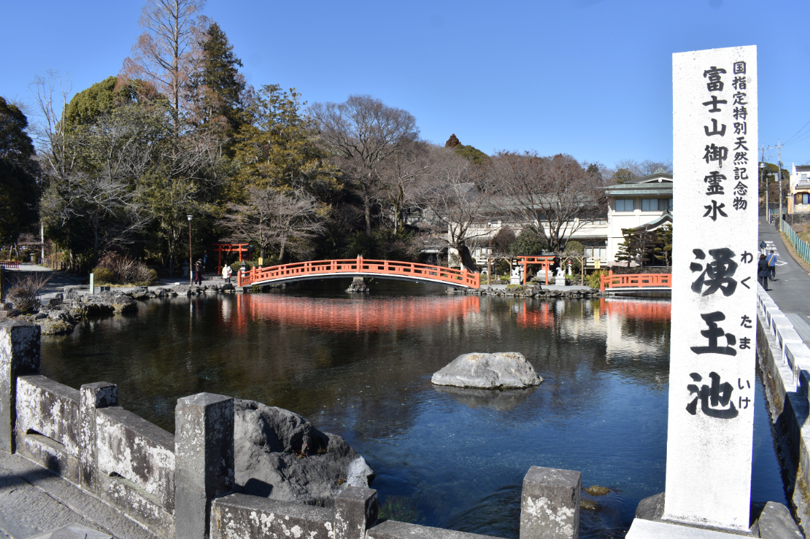
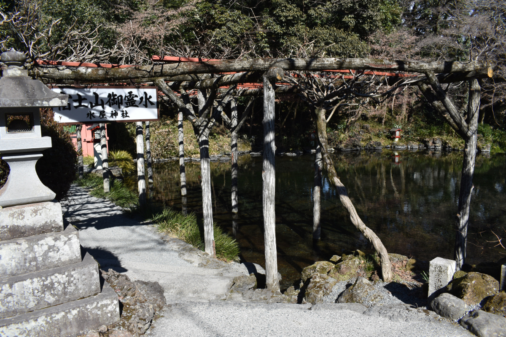
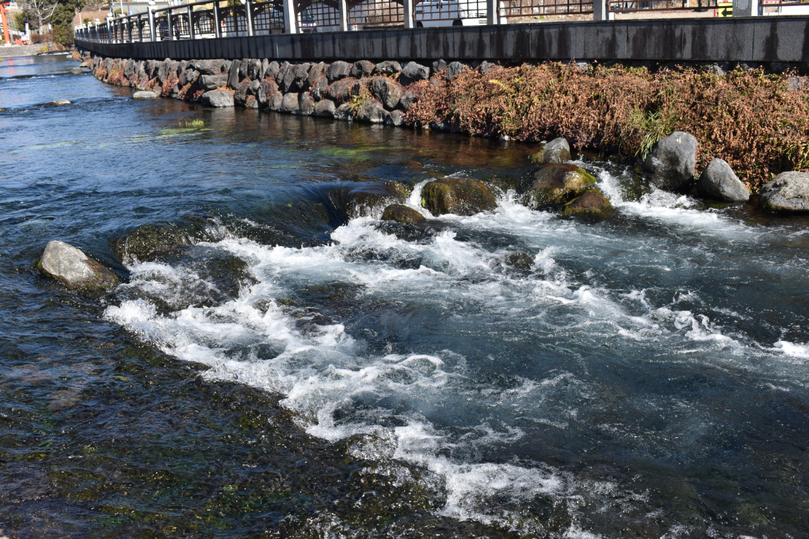
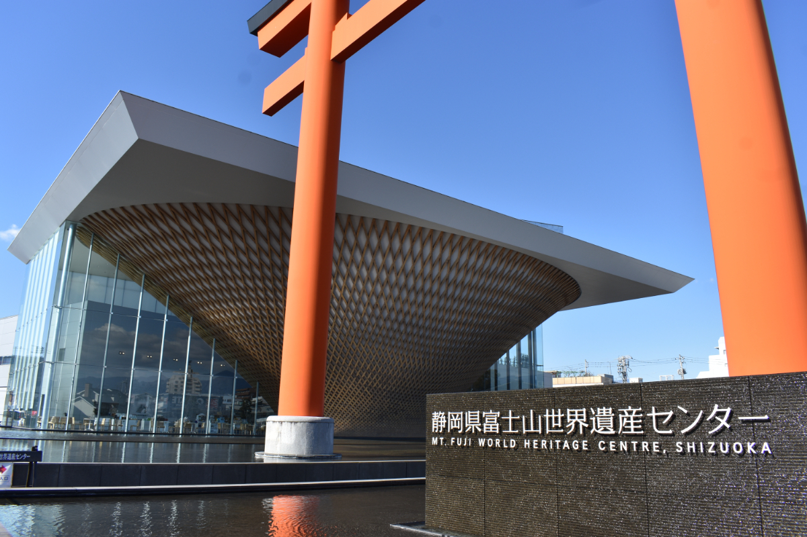
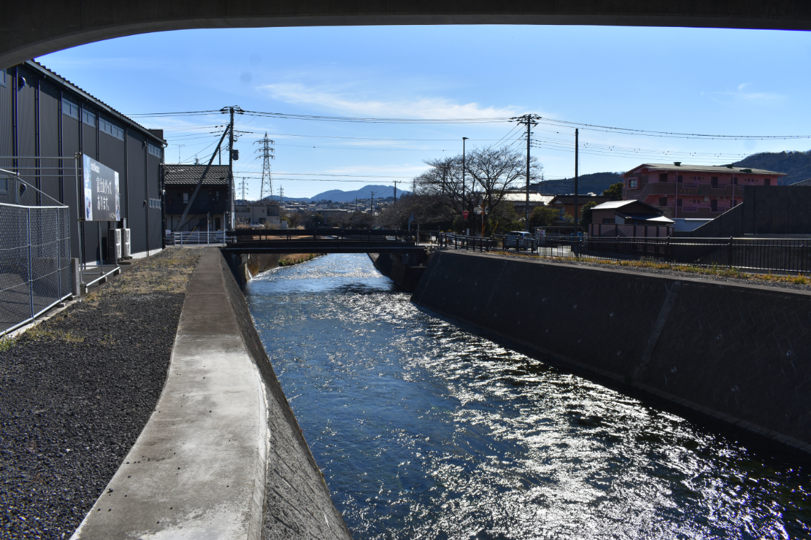

みずとであう -03
ゆらり、さらり、水は行く。温もり溢れるあの町へ

▲ くぬぎ養鱒場裏の芝川。「芝川のり」も有名。
歴史と共に流れる水は、世界遺産からやってくる。
写真ホバーまたはタップで説明文が表示されます。

『富士山本宮浅間大社』 全国の浅間神社の総本宮。周辺にも、多くの川や池があります。年に数回のお祭りも大人気。

『富士山本宮浅間大社ー湧玉池』 鴨たちの泳ぐ透き通った青い水と紅い橋は必見。ここから続く神田川も美しい。

『富士山本宮浅間大社ー湧玉池』 ここでは湧水を持ち帰ることもできます。このお水はしっかり煮沸してから飲んでくださいね。

『富士山本宮浅間大社ー神田川』 湧玉池から境内、町に流れる川の源。御神火まつりではこの川を、山車を担いで練り歩きます。

『富士山世界遺産センター』 逆さ富士がモチーフの資料館。富士山の歴史を登りながら学べて面白いです。企画展も要チェック。
